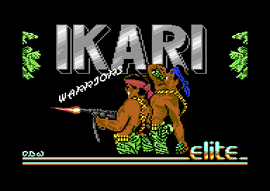

<meta charset="utf-8">
<meta name="viewport" content="width=device-width, initial-scale=1">
<title>Ikari Warriors — graphics</title>
<link rel="preconnect" href="https://fonts.googleapis.com">
<link rel="stylesheet" href="https://fonts.googleapis.com/css2?family=Lato:wght@400;700;900&family=IBM+Plex+Mono:wght@400;500&display=swap">
<style>
:root{
  --bg:#23262d; --paper:#e9e7e1; --surface:#ffffff; --surface-2:#f1efea; --line:#d5d3cc; --line-soft:#e0ded8;
  --ink:#2f3136; --ink-soft:#55585f; --ink-mute:#80838a;
  --link:#1f5fa8; --link-hover:#154480; --accent:#1f5fa8;
  --amber:#c25a00; --cyan:#1f5fa8; --coral:#d04a3a; --green:#2a8a4a; --violet:#4a5bd6; --hl:#fff0c2;
  --chip:#2f3136; --chip-ink:#ffffff;
  --c64blue:#40318d; --c64grey:#686868;
  --fd:'Lato',system-ui,sans-serif; --fb:'Lato',system-ui,sans-serif; --fm:'IBM Plex Mono',ui-monospace,Menlo,monospace;
  --col:1080px; --gx:68px; --fs:17px; --lh:1.6; --hw:900; --h1:46px; --h2:26px; --sy:48px; --pp:26px; --r:10px;
  --plate-shadow:0 1px 2px rgba(0,0,0,.05),0 4px 14px rgba(0,0,0,.05);
}
*{box-sizing:border-box}
html{background:var(--bg);min-height:100%}
body{background:var(--paper);color:var(--ink);font-family:var(--fb);font-size:var(--fs);line-height:var(--lh);max-width:var(--col);margin:0 auto;min-height:100vh;padding:0 0 4rem}
h1,h2,h3{font-weight:var(--hw);letter-spacing:-.01em;text-wrap:balance;color:var(--ink);margin:0}
.wrap{padding:0 var(--gx)}
.hero{padding:48px var(--gx) 8px;text-align:left}
.eyebrow{font-family:var(--fm);font-size:12px;letter-spacing:.08em;text-transform:uppercase;color:var(--ink-mute);margin:0 0 10px}
.hero h1{font-size:var(--h1);line-height:1.15;letter-spacing:-.02em;margin:0 0 14px}
.hero .sub{margin:0 0 .6em;color:var(--ink-soft)}
section{padding:var(--sy) 0 24px}
section:last-of-type{border-bottom:none}
.fig{font-family:var(--fm);font-size:12px;letter-spacing:.08em;text-transform:uppercase;color:var(--ink-mute);margin:0 0 10px}
h2.t{font-size:var(--h2);margin-bottom:12px}
.lede{color:var(--ink-soft);margin:0 0 30px}
.plate{background:var(--surface);border:1px solid var(--line);border-radius:var(--r);padding:var(--pp);box-shadow:var(--plate-shadow)}
.cap{font-size:14px;color:var(--ink-mute);margin-top:14px;line-height:1.55}
.cap b{color:var(--ink);font-weight:700}
code{font-family:var(--fm);font-size:.82em;background:var(--chip);color:var(--chip-ink);border-radius:4px;padding:2px 6px;overflow-wrap:break-word;-webkit-box-decoration-break:clone;box-decoration-break:clone}

.plate{margin:0 0 22px}
@media (max-width:760px){:root{--gx:16px;--h1:36px;--pp:14px}.ik-two{grid-template-columns:1fr}}
.ik-two{display:grid;grid-template-columns:1fr 1fr;gap:16px;align-items:start}
.ik-table{border-collapse:collapse;font-size:14px;width:100%}
.ik-table td,.ik-table th{border-bottom:1px solid var(--line-soft);padding:5px 8px;text-align:left;vertical-align:top}
.ik-px{image-rendering:pixelated;display:block;max-width:100%;height:auto}
.ik-sheet{display:flex;flex-wrap:wrap;gap:6px}
.ik-sheet figure{margin:0;background:#222;border-radius:4px;padding:3px;text-align:center}
.ik-sheet figcaption{font:500 10px/1.3 var(--fm);color:#fff}
.ik-sheet canvas{image-rendering:pixelated;display:block}
.ik-row{display:flex;flex-wrap:wrap;gap:8px;align-items:center;margin:10px 0}
.ik-note{font-size:14px;color:var(--ink-mute)}
sup.fn{font-size:.7em;line-height:0}
sup.fn a{text-decoration:none}
sup.fn + sup.fn::before{content:","}
.overview-shot{margin:22px 0}
.overview-shot img{width:100%;max-width:768px;height:auto;aspect-ratio:384/272;image-rendering:pixelated;display:block}
.overview-shot figcaption{font-size:14px;color:var(--ink-mute);margin-top:8px;max-width:768px}

</style>
<!-- tabs -->
<header class="hero">
  <p class="eyebrow">Commodore 64 · 1988 · Elite Systems</p>
  <h1>Ikari Warriors: graphics</h1>
  <p class="sub">Every sprite the game draws its soldiers, tanks, helicopters and panels with, the characters the road is built from, and the loading picture.</p>
</header>
<main class="wrap">

<section id="sprites">
  <p class="fig">01 · Sprites</p>
  <h2 class="t">36 moving things on eight sprites</h2>
  <p>The Commodore 64 shows eight sprites on a line. The game moves up to 36 things at once, so a multiplexer sorts them by height and reuses the eight sprites down the screen (<a href="source.html#3474"><code>sort_sprites</code></a>). Bullets are not sprites at all: they are drawn into the characters of the road (<a href="source.html#174C"><code>update_shots</code></a>). Every frame below is drawn from the bytes of the Source tab, in multicolour, with the play area's shared colours 11 and 12 (dark and middle grey) unless the group says otherwise.</p>
  <div id="sGroups"></div>
  <p id="sCap" class="cap"></p>
</section>

<section id="panels">
  <p class="fig">02 · Panels</p>
  <h2 class="t">Panels in the borders</h2>
  <p>The score panel above the road and the status bar below it sit in the screen's borders, where characters cannot go. The game opens the borders by changing the screen height on the right raster lines, then places eight sprites in each, frames <code>$10</code>-<code>$17</code> above (<a href="source.html#4400"><code>upper_panel_sprites</code></a>) and <code>$18</code>-<code>$1F</code> below (<a href="source.html#4600"><code>lower_panel_sprites</code></a>). The digits are drawn into the sprites' bytes (<a href="source.html#3BC9"><code>draw_panel_digit</code></a>), and so is the tank's fuel bar (<a href="source.html#3AE8"><code>draw_fuel_bar</code></a>). Both sets are in the sheet above.</p>
</section>

<section id="chars">
  <p class="fig">03 · Characters</p>
  <h2 class="t">The ground's characters</h2>
  <p>The road is made of multicolour characters, each with its own colour in <a href="source.html#7E80"><code>char_colours</code></a>. The first 87 are always there: the earth, grass, water and panel edges at <a href="source.html#FC48"><code>game_charset</code></a>. The rest of the 256 are loaded in sets as the road reaches them (<a href="source.html#8386"><code>map_load_tiles</code></a>); the <a href="levels.html">Maps</a> page shows them in place. A character's colour also says what it does: either of its top two bits makes it solid, the second also stops bullets, and a low nibble of <code>$E</code> is water.</p>
  <div class="plate"><canvas id="cCanvas" class="ik-px"></canvas><p class="cap">The game's own characters, each in its colour from <a href="source.html#7E80"><code>char_colours</code></a>, on the start of the road's colours: orange, brown and light green.</p></div>
</section>

<section id="loading">
  <p class="fig">04 · Loading</p>
  <h2 class="t">The loading picture</h2>
  <p>The loader shows a multicolour bitmap while the game loads. It reads the picture as its second and third blocks of sectors, tracks 15 to 17 of the disk, and shows it until the last blocks load over its memory. The running game keeps none of it, so the picture below is a screenshot from the emulator rather than a drawing from the listing.</p>
  <figure class="overview-shot"><figcaption>The loading picture, in the emulator. The rest of the game on the disk is stored with every byte combined with <code>$C9</code> by exclusive or, which the loader undoes.</figcaption></figure>
</section>
</main>
<script src="../../lib/c64.js"></script>
<script>
(function () {
  const $ = id => document.getElementById(id);
  if (typeof C64 === 'undefined') { $('sCap').textContent = 'This page needs the site\'s shared scripts: open it from the built site.'; return; }
  const P = C64.PAL, hx = v => '$' + v.toString(16).toUpperCase().padStart(2, '0');
  C64.load('listing.json').then(L => {
    const ram = L.ram;
    // [first frame, last frame, name, colour, shared 1, shared 2, base]: the frames are the sprite
    // pointers' values in bank 1 ($4000 + 64 * frame); the intro's shapes are kept at $0800 and swapped
    // over frames $41-$50 for the opening sequence (swap_intro_sprites, $12E3).
    const G = [
      [0x10, 0x17, 'The score panel, above the road', 1, 2, 0, 0x4000],
      [0x18, 0x1F, 'The status bar, below the road: colour 13 on 2 and 5, as irq_lower_panel sets them', 13, 2, 5, 0x4000],
      [0x41, 0x48, 'A player falling (death_frames)', 10, 11, 12, 0x4000],
      [0x49, 0x50, 'Soldiers standing, one frame a facing', 15, 11, 12, 0x4000],
      [0x51, 0x6E, 'Soldiers running', 15, 11, 12, 0x4000],
      [0x6F, 0x6F, 'A soldier diving in water', 15, 11, 12, 0x4000],
      [0x70, 0x74, 'A grenade growing and shrinking as it arcs, in colour 7', 7, 11, 12, 0x4000],
      [0x75, 0x7A, 'The helicopter: its body, colour 5, and its turning rotor', 5, 11, 12, 0x4000],
      [0x7B, 0x81, 'An explosion\'s cloud', 7, 11, 12, 0x4000],
      [0x82, 0x88, 'A mine going off', 7, 11, 12, 0x4000],
      [0x89, 0x92, 'The title\'s letters: IKARI and Warriors', 15, 11, 12, 0x4000],
      [0x93, 0x9F, 'The ending\'s figures, two sprites wide and four high, colour 5', 5, 11, 12, 0x4000],
      [0xA0, 0xC5, 'The players, colour 10 for player 1 (player 2 is 9)', 10, 11, 12, 0x4000],
      [0xC6, 0xDD, 'A tank\'s turret and treads, in each direction', 10, 11, 12, 0x4000],
      [0xDE, 0xDE, 'The IN sign over an empty tank', 1, 11, 12, 0x4000],
      [0xDF, 0xE1, 'A smoking tank, on its countdown', 10, 11, 12, 0x4000],
      [0xE2, 0xE9, 'Soldiers wading in water', 15, 11, 12, 0x4000],
      [0x41, 0x50, 'The opening sequence\'s own shapes, kept at $0800: the plane and its crew', 1, 11, 12, 0x0800 - 0x41 * 64],
    ];
    const el = $('sGroups');
    G.forEach(([a, z, name, c, m1, m2, base]) => {
      const h = document.createElement('h3'); h.style.cssText = 'font-size:16px;margin:18px 0 8px';
      h.textContent = name + ' (' + (a === z ? hx(a) : hx(a) + ' to ' + hx(z)) + (base === 0x4000 ? '' : ', from $0800') + ')';
      el.appendChild(h);
      const g = document.createElement('div'); g.className = 'ik-sheet';
      for (let f = a; f <= z; f++) {
        const fig = document.createElement('figure'), cv = document.createElement('canvas'), s = 3;
        cv.width = 24 * s; cv.height = 21 * s;
        const at = base + f * 64;
        C64.drawSpriteMC(cv.getContext('2d'), ram.subarray(at, at + 63), 0, 0, s, P[c], P[m1], P[m2]);
        const cap = document.createElement('figcaption'); cap.textContent = base === 0x4000 ? hx(f) : '$' + at.toString(16).toUpperCase();
        fig.appendChild(cv); fig.appendChild(cap); g.appendChild(fig);
      }
      el.appendChild(g);
    });
    $('sCap').textContent = 'Where a group\'s colour is not stated, it is chosen here to show the shape; the game sets it per soldier.';
    // The game's own 87 characters ($FC48, copied to $4800 by restore_charset), each in its char_colours colour.
    const cv = $('cCanvas'), s = 3, per = 16, n = 87;
    cv.width = per * 9 * s; cv.height = Math.ceil(n / per) * 9 * s;
    const ctx = cv.getContext('2d'); ctx.fillStyle = '#222'; ctx.fillRect(0, 0, cv.width, cv.height);
    const set = ram.subarray(0xFC48, 0xFC48 + n * 8);
    for (let i = 0; i < n; i++) {
      const col = ram[0x7E80 + i] & 15, x = (i % per) * 9 * s, y = Math.floor(i / per) * 9 * s;
      if (col & 8) C64.drawGlyphMC(ctx, set, i, x, y, s, [P[8], P[9], P[13], P[col & 7]]);
      else C64.drawGlyph(ctx, set, i, x, y, s, P[col & 7], P[8]);
    }
  });
})();
</script>

<footer style="margin:16px 0 0;padding:22px var(--gx) 0;border-top:1px solid #e0ded8;font-family:'IBM Plex Mono',ui-monospace,Menlo,monospace;font-size:12px;color:#80838a"><a href="https://github.com/gamesexplained/gamesexplained" style="color:#1f5fa8;text-decoration:none">GitHub</a> · <a href="https://discord.gg/3V9GWyRDWV" style="color:#1f5fa8;text-decoration:none">Discord</a><br>© Games Explained contributors. Write-ups, facts and symbol maps are available under <a href="https://creativecommons.org/licenses/by-sa/4.0/" style="color:#1f5fa8;text-decoration:none">CC BY-SA 4.0</a>; code under <a href="https://opensource.org/licenses/MIT" style="color:#1f5fa8;text-decoration:none">MIT</a></footer>
